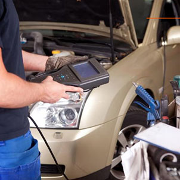

Es recomendable controlar el sistema de refrigeración al menos una vez por año para prevenir el recalentamiento del motor y futuros problemas con la tapa de cilíndros y el resto del motor.
* Radiador de Agua
* Depósito de Agua
* Mangueras
* Termostato
* Electroventilador
* Bomba de Agua
* Líquido Refrigerante
